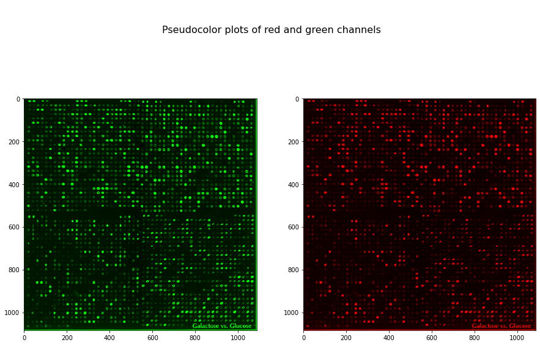

DNA microarray processing
Contents
from __future__ import division, print_function
%matplotlib inline
DNA microarray processing¶
Data in this example¶
Yeast microarrays for genome wide parallel genetic and gene expression analysis

Two-color fluorescent scan of a yeast microarray containing 2,479 elements (ORFs). The center-to-center distance between elements is 345 μm. A probe mixture consisting of cDNA from yeast extract/peptone (YEP) galactose (green pseudocolor) and YEP glucose (red pseudocolor) grown yeast cultures was hybridized to the array. Intensity per element corresponds to ORF expression, and pseudocolor per element corresponds to relative ORF expression between the two cultures.
by Deval A. Lashkari, http://www.pnas.org/content/94/24/13057/F1.expansion
Learn more about microarrays:
More example data:
MicroArray Genome Imaging & Clustering Tool by Laurie Heyer & team, Davidson College
import matplotlib.pyplot as plt
import numpy as np
from skimage import io, img_as_float
microarray = io.imread('../images/microarray.jpg')
# Scale between zero and one
microarray = img_as_float(microarray)
plt.figure(figsize=(10, 5))
plt.imshow(microarray[:500, :1000], cmap='gray', interpolation='nearest');
from skimage import color
f, (ax0, ax1) = plt.subplots(1, 2, figsize=(15, 10))
red = microarray[..., 0]
green = microarray[..., 1]
red_rgb = np.zeros_like(microarray)
red_rgb[..., 0] = red
green_rgb = np.zeros_like(microarray)
green_rgb[..., 1] = green
ax0.imshow(green_rgb, interpolation='nearest')
ax1.imshow(red_rgb, interpolation='nearest')
plt.suptitle('\n\nPseudocolor plots of red and green channels', fontsize=16);

from skimage import filters
mask = (green > 0.1)
plt.imshow(mask[:1000, :1000], cmap='gray');
z = red.copy()
z /= green
z[~mask] = 0
print(z.min(), z.max())
plt.imshow(z[:500, :500], cmap=plt.cm.gray, vmin=0, vmax=2);
0.0 9.807692307692308
/tmp/ipykernel_49951/2861516911.py:2: RuntimeWarning: divide by zero encountered in true_divide
z /= green
/tmp/ipykernel_49951/2861516911.py:2: RuntimeWarning: invalid value encountered in true_divide
z /= green
Locating the grid¶
both = (green + red)
plt.imshow(both, cmap='gray');
from skimage import feature
sum_down_columns = both.sum(axis=0)
sum_across_rows = both.sum(axis=1)
dips_columns = feature.peak_local_max(sum_down_columns.max() - sum_down_columns, min_distance=5)
dips_columns = np.sort(dips_columns.ravel())
M = len(dips_columns)
column_distance = np.mean(np.diff(dips_columns))
dips_rows = feature.peak_local_max(sum_across_rows.max() - sum_across_rows, min_distance=5)
dips_rows = np.sort(dips_rows.ravel())
N = len(dips_rows)
row_distance = np.mean(np.diff(dips_rows))
print('Columns are a mean distance of %.2f apart' % column_distance)
print('Rows are a mean distance of %.2f apart' % row_distance)
f, (ax0, ax1) = plt.subplots(1, 2, figsize=(15, 5))
ax0.plot(sum_down_columns)
ax0.scatter(dips_columns, sum_down_columns[dips_columns])
ax0.set_xlim(0, 200)
ax0.set_title('Column gaps')
ax1.plot(sum_across_rows)
ax1.scatter(dips_rows, sum_across_rows[dips_rows])
ax1.set_xlim(0, 200)
ax0.set_title('Row gaps');
Columns are a mean distance of 20.13 apart
Rows are a mean distance of 20.63 apart
P, Q = 500, 500
plt.figure(figsize=(15, 10))
plt.imshow(microarray[:P, :Q])
for i in dips_rows[dips_rows < P]:
plt.plot([0, Q], [i, i], 'm')
for j in dips_columns[dips_columns < Q]:
plt.plot([j, j], [0, P], 'm')
plt.axis('image');
out = np.zeros(microarray.shape[:2])
M, N = len(dips_rows), len(dips_columns)
for i in range(M - 1):
for j in range(N - 1):
row0, row1 = dips_rows[i], dips_rows[i + 1]
col0, col1 = dips_columns[j], dips_columns[j + 1]
r = microarray[row0:row1, col0:col1, 0]
g = microarray[row0:row1, col0:col1, 1]
ratio = r / g
mask = ~np.isinf(ratio)
mean_ratio = np.mean(ratio[mask])
if np.isnan(mean_ratio):
mean_ratio = 0
out[row0:row1, col0:col1] = mean_ratio
/tmp/ipykernel_49951/2702103506.py:12: RuntimeWarning: divide by zero encountered in true_divide
ratio = r / g
/tmp/ipykernel_49951/2702103506.py:12: RuntimeWarning: invalid value encountered in true_divide
ratio = r / g
f, (ax0, ax1) = plt.subplots(1, 2, figsize=(15, 10))
ax0.imshow(microarray)
ax0.grid(color='magenta', linewidth=1)
ax1.imshow(out, cmap='gray', interpolation='nearest', vmin=0, vmax=3);
ax1.grid(color='magenta', linewidth=1)
Transform the intensity to spot outliers¶
from skimage import exposure
f, (ax0, ax1) = plt.subplots(1, 2, figsize=(15, 10))
ax0.imshow(microarray)
ax0.grid(color='magenta', linewidth=1)
ax1.imshow(exposure.adjust_log(out, gain=0.4), cmap='gray', interpolation='nearest', vmin=0, vmax=3);
ax1.grid(color='magenta', linewidth=1)